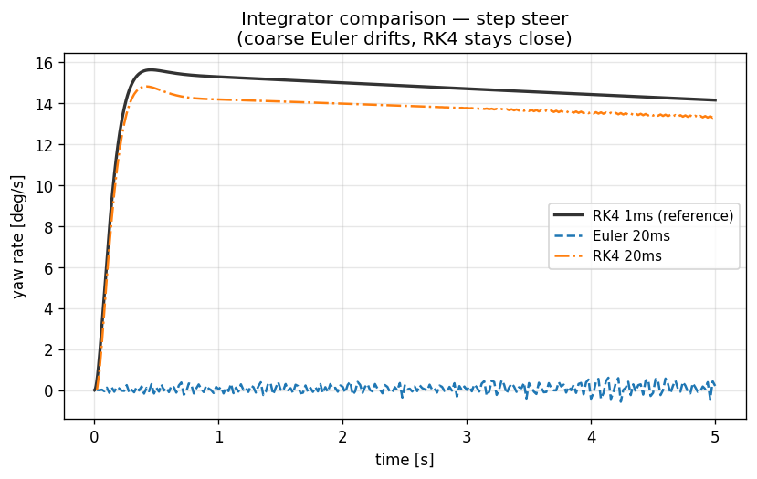

11. Numerical Integration (RK4, Substepping, 1-Step Lag)¶
Learning objectives¶
이 chapter 를 마치면 다음을 할 수 있다.
- Euler 와 RK4 의 local/global error order 와 stability region 을 비교한다.
- stiff system 에서 substepping 이 필요한 이유를 frequency/stability 로 설명한다.
- 1-step lag 가 self-referential 식 (weight transfer) 을 단순화하는 의도적 추정임을 이해하고 그 bias 를 정량 평가한다.
- RK4 + 1 ms substep + 1-step lag 조합의 trade-off 를 판단한다.
Prerequisites¶
- Chapter 04-06 — Ld1-Ld3 의 EoM (적분 대상).
- 외부 — ODE 수치해석 기초 (Hairer/Wanner, Numerical Recipes).
11.1 동기 — ODE 일반형¶
차량 dynamics 를 1차 ODE 로:
\(y\) state, \(u\) input, \(t\) time. Ld1 의 \(y\in\mathbb{R}^8\), Ld3 은 더 크다. 수치 적분은 \(y(t+dt)\) 를 \(y(t), f(y,t)\) 로부터 추정한다.
11.2 가정¶
| 가정 | 의미 | 깨지는 case |
|---|---|---|
| Fixed step | adaptive step 없음 | 급격한 transient (RK45 필요) |
| Explicit RK4 | implicit 아님 | very stiff (BDF/IRK) |
| 1-step lag | weight transfer 가 직전 step \(a\) 기반 | 큰 dt 에서 transient bias |
| ODE (not DAE) | algebraic constraint 없음 | constrained multibody (Ld4-Ld5) |
11.3 Explicit Euler¶
local error \(O(dt^2)\), global \(O(dt)\). linear test \(\dot y=\lambda y\) 의 stable region:
\(\lambda=-1000\) (stiff) 이면 \(dt<0.002\) 필요. tire-vertical mode (\(k_{\text{tire}}=220\) kN/m, \(m_u=40\) kg → \(\omega\approx74\) rad/s) 같은 stiff cluster 에서 Euler 는 작은 dt 를 강제한다.

동일 step-steer 를 RK4 1ms (reference) vs Euler 20ms vs RK4 20ms. stiff suspension 에서 Euler 20ms 는 불안정해지고 RK4 는 큰 dt 에서도 reference 에 근접한다.
11.4 Runge-Kutta 4¶
local error \(O(dt^5)\), global \(O(dt^4)\). stability:
Euler 보다 훨씬 넓어 stiff system 의 일부 범위까지 stable.
cost: step 당 \(f\) 4 회 evaluation (Euler 의 4 배). 그러나 \(O(dt^4)\) error 로 같은 정확도에 더 큰 dt 가능 → 결과적으로 더 빠를 수 있다. 1 ms RK4 의 차량 dynamics numerical error 는 \(O(10^{-12})\) 수준.
11.5 Substepping¶
외부 host (CARLA) tick 은 보통 20 ms (50 Hz). 차량 spring frequency 10-15 Hz 라 outer dt 20 ms 로 직접 RK4 하면 oscillation 인접에서 artifact 가 생긴다.
(max_substeps cap). 매 outer step 안에서 \(N\) 회 RK4 inner step.
inner dt 선택 기준:
\(f_{\max}\) 는 가장 빠른 mode. tire-vertical mode (~12 Hz) 면 \(dt_{\text{inner}} \le 8\) ms. 1 ms default 는 보수적 — 정확도 우선.
11.6 1-Step Lag — self-referential 단순화¶
Ld1 의 longitudinal weight transfer:
\(F_z\) 가 \(a_x\) 의 함수, \(a_x\) 가 \(F_z\) 의 함수 — self-referential. 엄밀히는 fixed-point iteration 이 필요하나 매 substep iteration → 비용 + tire nonlinearity 로 수렴 보장 없음.
1-step lag: 직전 substep 의 \(a_{x,\text{prev}}\) 사용.
bias \(\sim dt\cdot|da_x/dt|\). brake \(a_x=-5\) m/s², \(da_x/dt\sim100\) m/s³ 라도 1 ms substep 에서 bias \(=0.1\) m/s² → \(\Delta F_z\approx30\) N (sedan). 무시 가능. 같은 패턴이 lateral transfer (\(a_{y,\text{prev}}\)), anti-dive 에도 적용 된다.
11.7 RK4 substep + 1-step lag 결합¶
매 substep: (1) \(a_{x},a_{y}\) prev 로 Fz 계산, (2) RK4 4 stage, (3) substep 끝에서 \(a_{\cdot,\text{prev}}\) 갱신 (\(= F_{\cdot}/m\)). RK4 4 stage 안에서는 \(a_{\text{prev}}\) constant — 매 stage update 도 가능하나 식 복잡 대비 효과 미미.
11.8 외부 outer dt 권고¶
| 사용 | outer dt | 비고 |
|---|---|---|
| CARLA 50 Hz | 20 ms | substep 10 cap, inner 2 ms |
| Lab analysis | 5 ms | 5 substeps of 1 ms (default) |
| Highest fidelity | 1 ms | no substep |
| MPC inner loop | 10-20 ms | substep 10-20 |
11.9 검증 전략¶
| 검증 | 케이스 |
|---|---|
| RK4 vs Euler | step_steer 에서 r(T), vx(T) 차이 측정 |
| Coarse Euler 불안정 | 큰 outer dt 에서 Euler 진동, RK4 안정 |
| 1-step lag bias | brake step 의 \(F_{z,f}\) 비율이 해석값과 0.1 % |
11.10 한계¶
| 항목 | 한계 | follow-up |
|---|---|---|
| RK4 stiff | implicit (BDF, IRK) 가 더 stable | Phase 2 |
| 1-step lag transient | fixed-point iteration 옵션 | Phase 2 |
| Variable-step | fixed step 만 (RK45 미지원) | Phase 2 |
| Symplectic | spring/damper energy 보존 우수 (Verlet) | 평가 |
| DAE | constrained multibody 필요 | Ld4-Ld5 |
11.11 다음 chapter 와의 연결¶
이 chapter 는 모든 Ld 의 EoM 을 적분하는 공통 수치 엔진을 다뤘다. chapter 12 는 이 엔진과 control 사다리를 묶는 전체 software architecture (ABI, binding, plugin) 를 다룬다.
11.12 참고문헌¶
- Hairer, E. & Wanner, G., Solving ODE II — Stiff and DAE Problems, Springer, 1996.
- Press, W.H. et al., Numerical Recipes, 3rd ed., Cambridge, 2007, §17.
11.13 Self-check¶
1. RK4 가 Euler 보다 step 당 4배 비싼데도 빠를 수 있는 이유?
error 가 $O(dt^4)$ 라 같은 정확도를 훨씬 큰 dt 로 달성. step 수가 1/4 이하로 줄면 총 evaluation 이 Euler 보다 적어질 수 있다.2. stiff system 에서 explicit Euler 가 강제하는 것은?
stable region $|1+dt\lambda|\le1$ 이 좁아 가장 빠른 mode($|\lambda|$ 큼)에 맞춰 매우 작은 dt 를 써야 한다. 비효율적.3. 1-step lag 의 bias 가 작은 이유를 정량으로?
bias $\sim dt\cdot|da/dt|$. 1 ms substep 에서 $da/dt\sim100$ m/s³ 라도 0.1 m/s² → $\Delta F_z\sim30$ N. static 수천 N 대비 무시 가능.4. outer dt 20 ms 인데 spring 이 12 Hz 면 왜 substep?
$dt_{\text{inner}}\le1/(10 f_{\max})\approx8$ ms 필요. 20 ms 직접 적분은 oscillation 을 under-sample 해 numerical artifact. substep 으로 inner 를 작게.5. Ld4-Ld5 에서 RK4 만으로 부족한 이유?
joint constraint 가 algebraic equation 을 더해 ODE 가 DAE 가 된다. explicit RK4 는 constraint drift 를 일으켜 DAE solver (index reduction, Baumgarte) 가 필요.11.14 VDSim 구현 노트¶
[VDSim impl] § 11.3 — Euler 옵션
SolverParams::Integrator::Euler(benchmark/fairness 용, default RK4).configs/solvers/euler_10ms.yaml로 coarse Euler numerical error 시범.[VDSim impl] § 11.5 — Substep 코드
core/src/bicycle_dynamics.cpp:117-119:defaultconst int N = std::max(1, std::min(sp_.max_substeps, static_cast<int>(std::ceil(dt / sp_.max_substep_dt)))); const double h = dt / static_cast<double>(N); for (int i = 0; i < N; ++i) substep(cmd, contacts, h);max_substep_dt=0.001,max_substeps=10. outer 5 ms → 5×1 ms, outer 20 ms → cap 10×2 ms.[VDSim impl] § 11.6 — 1-step lag 검증
brake step 실측 \(a_x=-3.36\) m/s² → 해석 \(\Delta F_z=1027\) N. sim \(F_{z,f}\) 비율 1.125 vs 해석 1.126, 오차 0.1 %.
[VDSim impl] § 11.7 — substep update 코드
core/src/seven_dof_dynamics.cpp:418-425:[VDSim impl] § 11.9 — Solver 비교
step_steer (δ=0.05, vx=10, 5 s):
Integrator substep r(T) vx(T) RK4 1 ms 0.17993 9.713 Euler 10 ms 0.17950 9.693 차이 +0.24 %, +0.21 %. outer 5 ms 면 Euler 도 양호, 50 ms 이상에서 진동. config:
configs/solvers/{rk4_1ms, euler_10ms}.yaml.